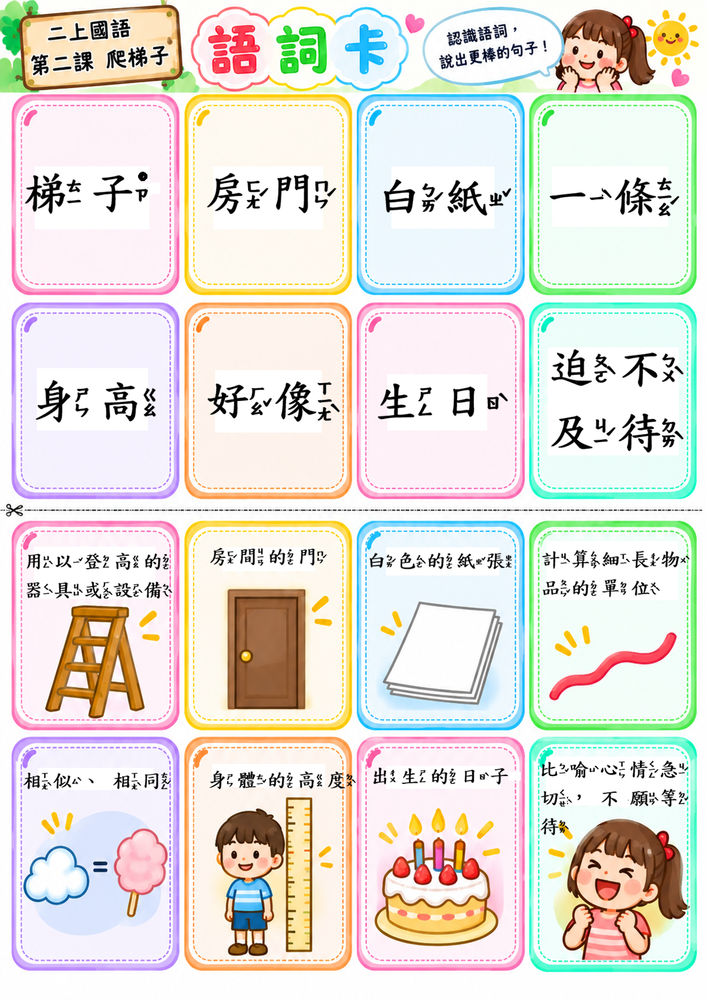

🚪
房門上的白紙
房門上貼著一張長長的白紙，上面畫著好多細細的短線。這不是塗鴉，而是專屬於我的神祕紀錄表！
「原來這不是一把真的木梯子，而是爸爸在房門白紙上為我畫下的身高線！」 透過動態身高梯、語音朗讀、語詞翻翻牌與句型魔術，一同探索成長的喜悅。
從白紙上的刻度，體會時間的累積與親情的溫暖，理解長大的深刻涵義。
房門上貼著一張長長的白紙，上面畫著好多細細的短線。這不是塗鴉，而是專屬於我的神祕紀錄表！
每到生日那天，爸爸總會讓我靠著門站好，拿筆輕輕在我的頭頂沿著劃上一條線。看著線條一格一格增加，心裡滿是成就感。
我不停期待著：哪一天我會爬到最高？長大不只是身高變高，我也學會自己穿鞋、收拾書包，以及關心身邊的家人與同學！
點擊卡片發音朗讀，翻面探索深入詞義、教師引導提示與生活例句！
「身」通常與身體、高度有關；「生」通常與出生、生長、生活有關。動手測驗看看：
觀察語詞的變化，體會數量的增多：
包含內建詞語配對翻翻樂、課文大意三格排序，以及專屬線上遊戲捷徑！
請依據課文發展順序，由下往上將三件大事放回梯子的第1格、第2格與第3格：
本課三大核心句型「又……」、「……才會……」、「好像……」，即時積木拼裝與朗讀！
南一版二上｜每節 40 分鐘｜降低單純抄寫，每堂皆有具體可檢核的學習成果。
神祕身高梯引起動機、看圖說話、加入「迫不及待」與「太好了」之語氣朗讀。
動作猜詞、語詞配對、數量語詞（一張／一張張／一張又一張）延伸引導。
生字分類、易錯字精教（爬、梯、紙、線）、身／生大對決與排行榜。
提取訊息、推論身高線為什麼像梯子、比較爸爸與作者高興的原因與成長定義。
「又……」表示再次發生、「……才會……」表達期待、「好像」完成比喻句。
從身體、能力、生活自理、關心別人四區蒐集成長證據，佈置成長博物館。
| 等級 | 學生自評自我期許 | 教師觀察與判斷重點 |
|---|---|---|
| ⭐⭐⭐ | 我會自己完成，也能說清楚我的想法。 | 內容正確、能獨立完成任務，並能流暢完整表達。 |
| ⭐⭐ | 我大部分會，提醒一下就能完成。 | 主要概念正確，經教師或同儕少量提示後能順利達標。 |
| ⭐ | 我還需要老師或同學幫忙，再練習一次。 | 尚未穩定掌握概念，需要具體示範、輔助或再次練習。 |
結合圖解與注音的高解析度語詞圖卡，適合投影教學、印製卡牌與小組快問快答。

上半部呈現清晰標楷體與標準注音符號，下半部輔以生活情境圖解與精簡詞義。可應用於：
{kind=link}